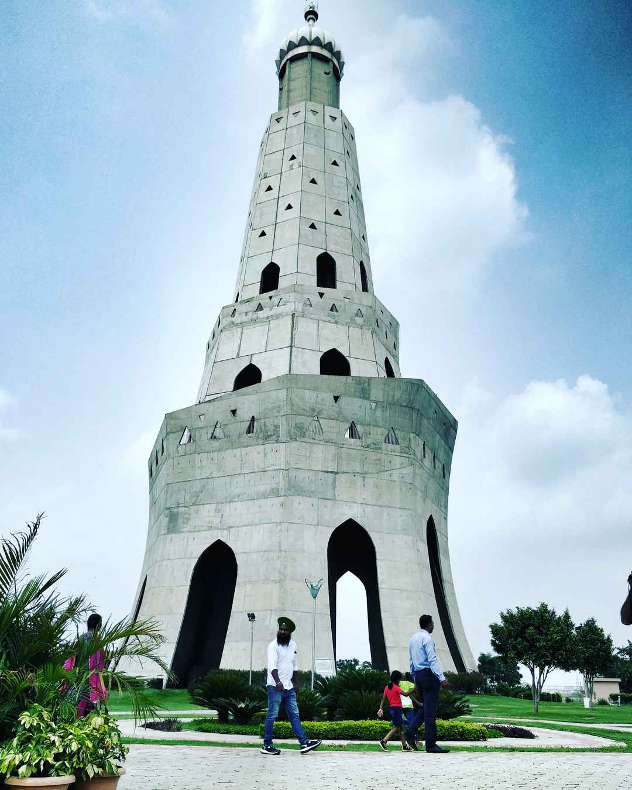
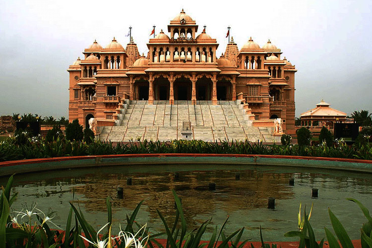

Punjab
Punjab
Land of Five Rivers
Punjab, a state bordering Pakistan, is the heart of India’s Sikh community. The city of Amritsar, founded in the 1570s by Sikh Guru Ram Das, is the site of Harmandir Sahib, the holiest gurdwara (Sikh place of worship). Known in English as the Golden Temple, and surrounded by the Pool of Nectar, it's a major pilgrimage site. Also in Amritsar is Durgiana Temple, a Hindu shrine famed for its engraved silver doors.